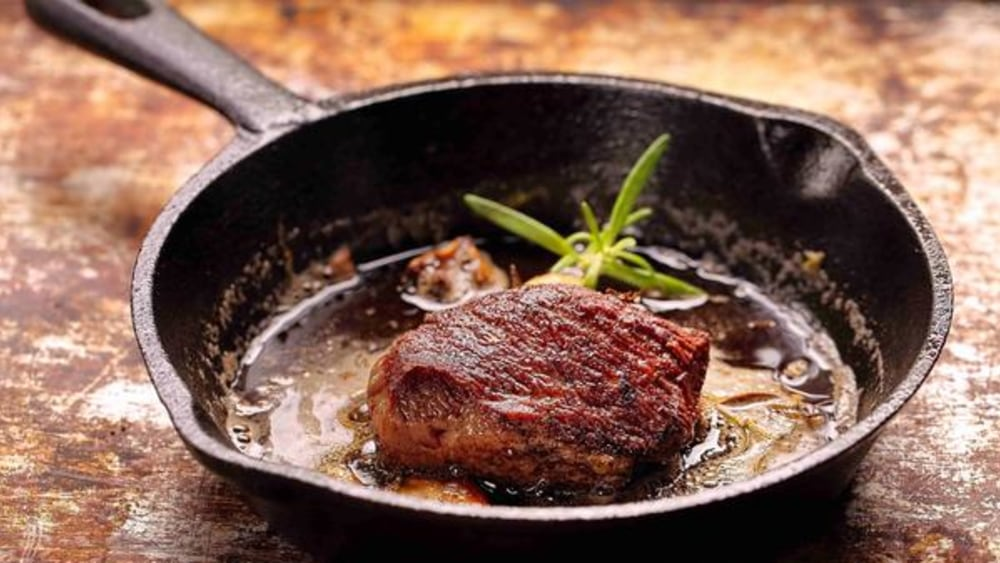

Steak in a Cast Iron Skillet

This simple method makes cooking steak easier than ever!
Description
We tend to assume steak has to be done on a flame grill or it's not real steak. Well,
that's not true! The key to a great steak is cooking at a very high heat that will
properly sear the outside of the cut. A cast iron grill is perfect for that! Now
you can enjoy steak at any time year, without the intimidation factor of a flame
grill!
Indredients
- Steak (New York Strip or Rybeye)
- 3 tsp kosher salt, divided
- 1 tbsp butter
- 1 sprig of rosemary
Directions
- Remove steak from refrigerator and sprinkle with 2 teaspoons salt; let stand 45-60 minutes.
- Preheat a cast-iron skillet over high heat until extremely hot, 4-5 minutes. Sprinkle remaining 1 teaspoon salt in bottom of skillet; pat beef dry with paper towels. Place steak in skillet and cook until easily moved, 1-2 minutes; flip, placing steak in a different section of the skillet. Cook 30 seconds and then begin moving steak, occasionally pressing slightly to ensure even contact with skillet.
- Add butter and rosemary to skillet, frequently basting the steak in the melted butter.
- Continue turning and flipping until cooked to desired degree of doneness (for medium-rare, a thermometer should read 135°; medium, 140°; medium-well, 145°), 1-2 minutes.